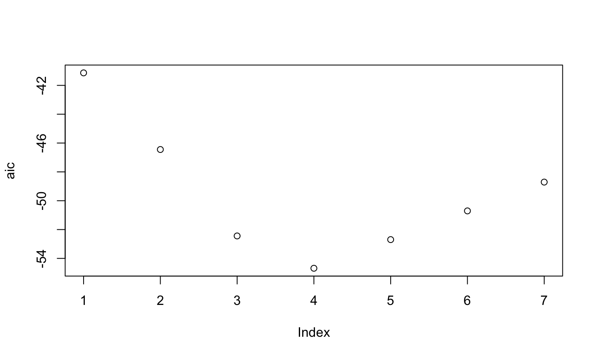
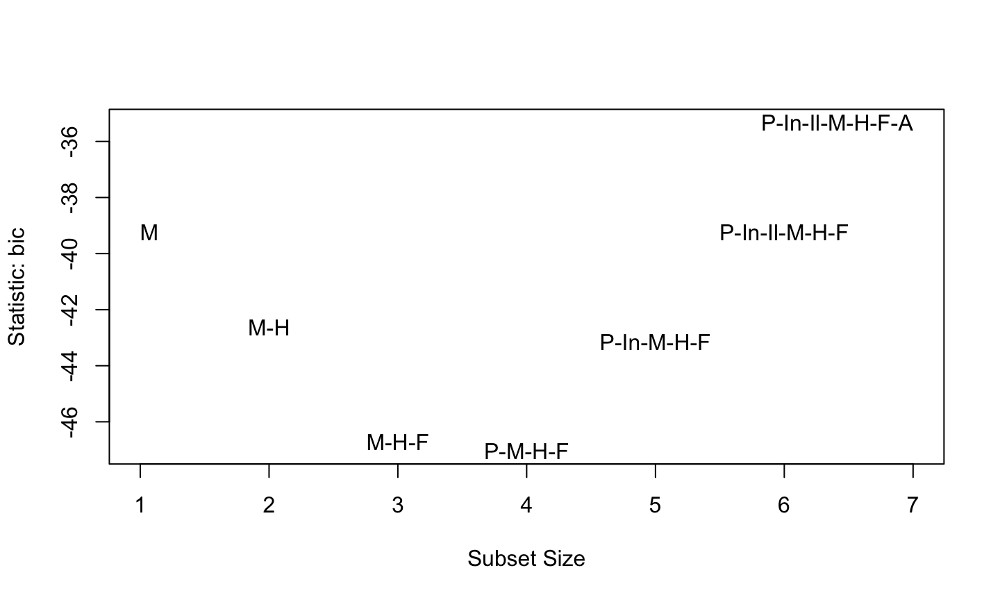
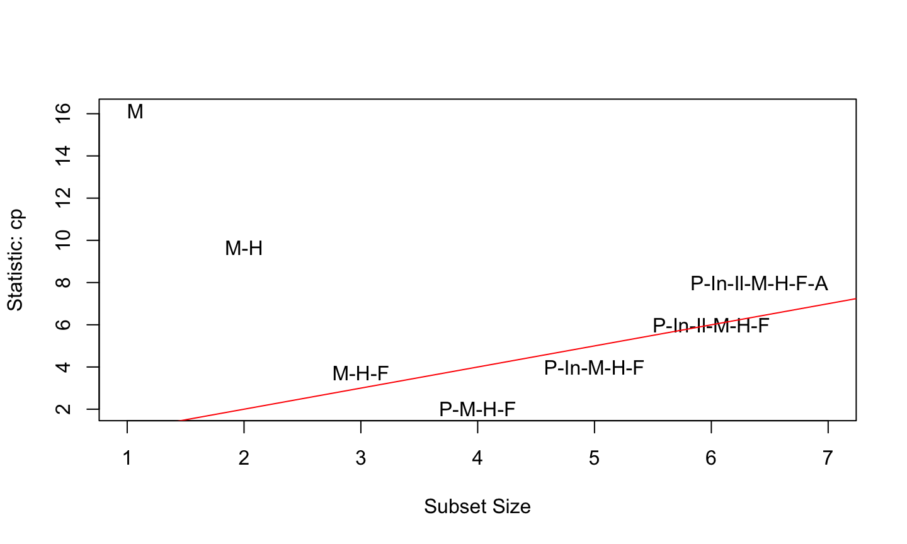
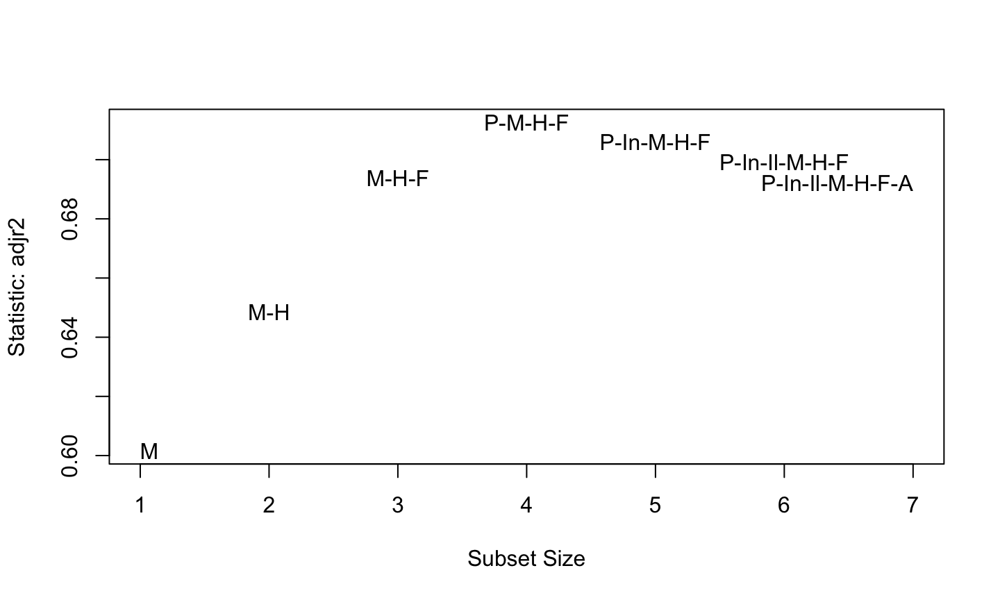
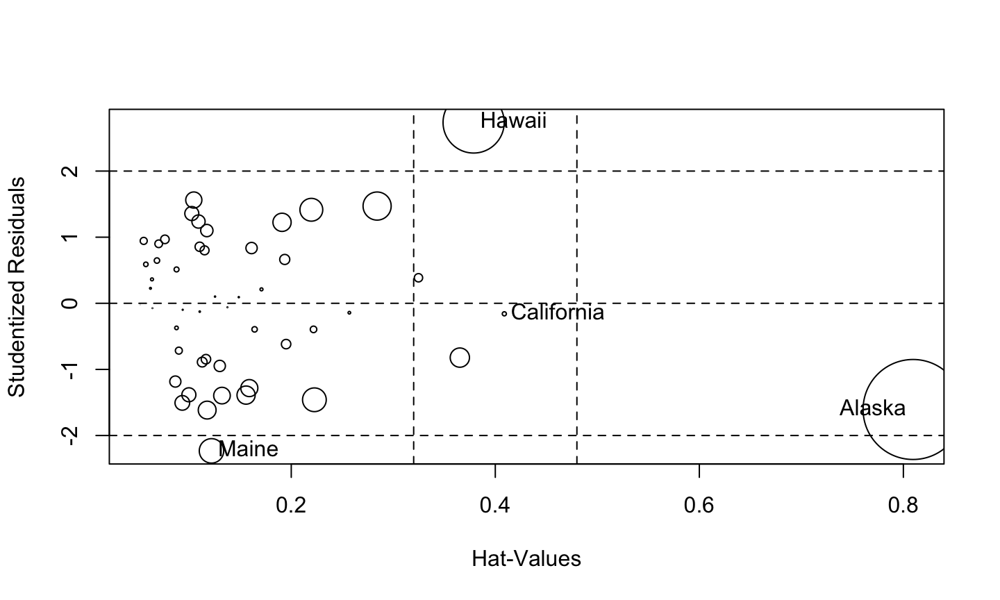

6/4/2020
Variable selection is intended to (objectively) find the “best” subset of predictors.
Reasons for this include:
Variable selection is affected by: • Outliers/influential observations. • Transformation of variables.
Iteration and experimentation are essential to finding better models, BUT be very careful not to overtrain your model to the sample data!
There are two aspects to variable selection:
P-values are a common criterion for selecting regressors to keep in our regression model.
This criterion keeps the regressors with the smallest p-values in the model, specifically the regressors with p-values less than some threshold, \(\alpha_\text{crit}\).
Akaike’s Information Criterion (AIC) and the Bayesian Information Criterion (BIC) are two information-based criteria for variable selection.
\(AIC(\mathcal{M})=-2L(\mathcal{M})+2p_\mathcal{M}\), where \(\mathcal{M}\) is the model, \(L(\mathcal{M})\) is the log likelihood of the model using the MLE estimates of the parameters, and \(p_\mathcal{M}\) is the number of regression coefficients in model \(\mathcal{M}\).
\(BIC(\mathcal{M})=-2L(\mathcal{M})+\log(n)p_\mathcal{M}\).
For linear regression models, \(-2L(\mathcal{M})=n\log(RSS_\mathcal{M}/n) + c\), where \(c\) is a constant that depends only on the observed data and not on the model, and \(RSS_\mathcal{M}\) is the RSS of model \(\mathcal{M}\).
The information criteria capture two aspects of model fit:
BIC tends to penalize complex models more heavily than AIC (anytime \(\log(n)>2\), i.e., \(n\geq 8\)), so it tends to suggest simpler models than the AIC criterion.
AIC and BIC are used as selection criteria for many types of models, not just linear regression models.
\(R^2\) never decreases as new regressors are added to the model.
Adjusted \(R^2\), \(R_a^2\), is a better criterion for assessing model fit.
For model \(\mathcal{M}\) with \(p_\mathcal{M}\) regression coefficients,
\[R_a^2 = 1-\frac{\frac{RSS_\mathcal{M}}{n-p_\mathcal{M}} }{\frac{TSS}{n-1}} = 1-\left(\frac{n-1}{n-p_\mathcal{M}} \right)(1-R^2) = 1-\frac{\hat{\sigma}_\mathcal{M}^2}{\hat{\sigma}^2_{null}}\]
Adding a regressor to a model only increases \(R_a^2\) if the regressor has some predictive value.
We favor models that produce larger \(R_a^2\).
Mallow’s \(C_p\) statistic is a criterion designed to quantify the predictive usefulness of a model.
At its core, Mallow’s \(C_p\) statistic is trying to estimate the standardized total mean square prediction error, given by \[\frac{1}{\sigma^2}\sum\limits_i E\left(\hat{y}_i - E(y_i) \right)^2 = \frac{1}{\sigma^2} \sum\limits_iMSE(\hat{y}_i),\]
where \(MSE(\hat{y}_i)=var(\hat{y}_i )+Bias(\hat{y}_i)^2\)
For model
For model \(\mathcal{M}\) with \(p_\mathcal{M}\) regression coefficients, this quantity is estimated by \[C_{p_\mathcal{M}} = RSS_\mathcal{M}/\hat{\sigma}_\Omega^2 + 2p_\mathcal{M} -n \]
where \(\hat{\sigma}_\Omega^2\) is the estimated error variance for the model with all regressors and \(RSS_\mathcal{M}\) is the residual sum of squares for model \(\mathcal{M}\).
For the model with all regressors (model \(\Omega\) with \(p_\Omega\) regression coefficients), \(C_{p_\Omega}=p_\Omega\).
If a model with \(p_\mathcal{M}\) regression coefficients fits the data well and has little or no bias, then \(E(C_{p_\mathcal{M}} )\approx p_\mathcal{M}\).
A model with a biased fit will have \(C_{p_\mathcal{M}}\) much larger than \(p_\mathcal{M}\). (Models with \(C_{p_\mathcal{M}}\) less than \(p_\mathcal{M}\) do not show evidence of bias).
It is common to plot \(C_{p_\mathcal{M}}\) versus \(p_\mathcal{M}\) and compare this to \(45^{o}\) line \((C_{p_\mathcal{M}}=p_\mathcal{M})\).
We favor models with small \(p_\mathcal{M}\) and \(C_{p_\mathcal{M}}\) close to \(p_\mathcal{M}\).
The mean squared error (MSE) for prediction is simply the average of the squared deviations between the fitted values and the observed data, i.e., \(\frac{1}{n}\sum (y_i-\hat{y}_i )^2\)
We favor models with smaller mean squared error, but the search algorithm is very important, otherwise you just use the model with the most regressors.
The RMSE (root mean squared error) is simply the square root of the MSE, and is sometimes used in place of the MSE.
The RMSE or MSE will produce identical variable selection results since they are 1-1 transformations of each other.
Cross-validation breaks the data into a training dataset and a test dataset to get a more accurate assessment of the predictive accuracy of a model.
There are many variations of how to choose the training and testing datasets for crossvalidation.
Leave-one-out crossvalidation uses each observation (individually) as a test data set, using the other n-1 observations as the training data.
In principle, we must fit n models to find the mean squared error, though this can be done using only a single model if you scale things correctly..
\(k\)-fold crossvalidation breaks the data into \(k\) unique sets.
For each set, the other \(k-1\) sets are used as training data, and then the fitted model is used to predict the responses for the kth testing set.
We must fit \(k\) models to determine the mean squared error.
There are other mechanisms for choosing the training and test datasets, but these are the most common.
When using cross-validation as your selection criterion, we prefer the model that produces the lowest MSE or RMSE.
An exhaustive search looks at all possible models using all available regressors.
Because of our error criteria, our search often simplifies to finding the model that minimizes \(RSS_\mathcal{M}\) for each value of \(p_\mathcal{M}\).
When the previous strategies may take too long, stepwise selection can be used to iteratively build models, choosing the next model as the one that maximizes or minimizes the criterion of interest.
Stepwise selection can miss the optimal model because we do not consider all possible models due to the one-at-a-time nature of adding/removing regressors.
P-values should not be taken as very accurate in stepwise or best subset searches because we are bound to see small p-values due to chance alone.
Stepwise selection tends to produce simpler models that are not necessarily the best for prediction.
We must respect hierarchy in models when it is naturally present.
Example: If we fit the model \(y=\beta_0+\beta_1 x+\beta_2 x^2+\epsilon\) and \(\beta_1\) is not significant, it would NOT make sense to remove \(x\) from the model but still keep \(x^2\).
The U.S. Bureau of the Census collected data from the 50 states in the 1970s. Measured variables include:
Population: population estimate as of July 1, 1975Income: per capita income (1974)Illiteracy: illiteracy (1970, percent of population)Life.Exp: life expectancy in years (1969–71)Murder: murder and non-negligent manslaughter rate per 100,000 population (1976)HS Grad: percent high-school graduates (1970)Frost: mean number of days with minimum temperature below freezing (1931–1960) in capital or large cityArea: land area in square milesstatedata = data.frame(state.x77) lmod_full <- lm(Life.Exp ~ ., data = statedata) knitr::kable(summary(lmod_full)$coefficients)
| Estimate | Std. Error | t value | Pr(>|t|) | |
|---|---|---|---|---|
| (Intercept) | 70.9432241 | 1.7479754 | 40.5859402 | 0.0000000 |
| Population | 0.0000518 | 0.0000292 | 1.7747731 | 0.0831835 |
| Income | -0.0000218 | 0.0002444 | -0.0892060 | 0.9293422 |
| Illiteracy | 0.0338203 | 0.3662799 | 0.0923346 | 0.9268712 |
| Murder | -0.3011232 | 0.0466207 | -6.4589973 | 0.0000001 |
| HS.Grad | 0.0489295 | 0.0233233 | 2.0978818 | 0.0419718 |
| Frost | -0.0057350 | 0.0031432 | -1.8245568 | 0.0751868 |
| Area | -0.0000001 | 0.0000017 | -0.0442593 | 0.9649075 |
lmod <- lm(Life.Exp ~ .-Area, data = statedata) knitr::kable(summary(lmod)$coefficients)
| Estimate | Std. Error | t value | Pr(>|t|) | |
|---|---|---|---|---|
| (Intercept) | 70.9893185 | 1.3874544 | 51.1651541 | 0.0000000 |
| Population | 0.0000519 | 0.0000288 | 1.8022535 | 0.0785181 |
| Income | -0.0000244 | 0.0002343 | -0.1043161 | 0.9174036 |
| Illiteracy | 0.0284588 | 0.3416329 | 0.0833023 | 0.9339978 |
| Murder | -0.3018231 | 0.0433443 | -6.9633836 | 0.0000000 |
| HS.Grad | 0.0484723 | 0.0206673 | 2.3453662 | 0.0236917 |
| Frost | -0.0057758 | 0.0029702 | -1.9445503 | 0.0583888 |
lmod <- update(lmod,. ~ . - Illiteracy) knitr::kable(summary(lmod)$coefficients)
| Estimate | Std. Error | t value | Pr(>|t|) | |
|---|---|---|---|---|
| (Intercept) | 71.0657509 | 1.0289415 | 69.0668559 | 0.0000000 |
| Population | 0.0000511 | 0.0000271 | 1.8877836 | 0.0656610 |
| Income | -0.0000248 | 0.0002316 | -0.1069555 | 0.9153104 |
| Murder | -0.3000077 | 0.0370418 | -8.0991613 | 0.0000000 |
| HS.Grad | 0.0477580 | 0.0185908 | 2.5689048 | 0.0136703 |
| Frost | -0.0059099 | 0.0024678 | -2.3948100 | 0.0209534 |
lmod <- update(lmod,. ~ . - Income) knitr::kable(summary(lmod)$coefficients)
| Estimate | Std. Error | t value | Pr(>|t|) | |
|---|---|---|---|---|
| (Intercept) | 71.0271285 | 0.9528530 | 74.541541 | 0.0000000 |
| Population | 0.0000501 | 0.0000251 | 1.996017 | 0.0520051 |
| Murder | -0.3001488 | 0.0366095 | -8.198669 | 0.0000000 |
| HS.Grad | 0.0465822 | 0.0148271 | 3.141704 | 0.0029681 |
| Frost | -0.0059433 | 0.0024209 | -2.455017 | 0.0180178 |
Population?Whether we should remove Population is a close call. We should probably keep it if it makes the model more interpretable.
lmod <- update(lmod,. ~ . - Population) knitr::kable(summary(lmod)$coefficients)
| Estimate | Std. Error | t value | Pr(>|t|) | |
|---|---|---|---|---|
| (Intercept) | 71.0363788 | 0.9832622 | 72.245614 | 0.0000000 |
| Murder | -0.2830652 | 0.0367313 | -7.706370 | 0.0000000 |
| HS.Grad | 0.0499487 | 0.0152011 | 3.285856 | 0.0019504 |
| Frost | -0.0069117 | 0.0024475 | -2.824025 | 0.0069877 |
All variables are now significant at \(\alpha_\text{crit}=0.05\).
summary(lmod_full)$r.squared
## [1] 0.7361563
summary(lmod)$r.squared
## [1] 0.7126624
summary(lmod_full)$adj.r.squared
## [1] 0.6921823
summary(lmod)$adj.r.squared
## [1] 0.693923
The \(R^2\) for the full model is 0.736. Our final model has an \(R^2\) of 0.713, which is only slightly lower.
HS.Grad with Illiteracyknitr::kable(summary(lm(Life.Exp ~ Illiteracy + Murder + Frost, statedata))$coefficients)
| Estimate | Std. Error | t value | Pr(>|t|) | |
|---|---|---|---|---|
| (Intercept) | 74.5567171 | 0.5842507 | 127.610835 | 0.0000000 |
| Illiteracy | -0.6017607 | 0.2989270 | -2.013069 | 0.0499811 |
| Murder | -0.2800474 | 0.0433940 | -6.453594 | 0.0000001 |
| Frost | -0.0086910 | 0.0029595 | -2.936708 | 0.0051663 |
HS.Grad with Illiteracyknitr::kable(summary(lm(Life.Exp ~ Illiteracy + Murder + Frost, statedata))$coefficients)
| Estimate | Std. Error | t value | Pr(>|t|) | |
|---|---|---|---|---|
| (Intercept) | 74.5567171 | 0.5842507 | 127.610835 | 0.0000000 |
| Illiteracy | -0.6017607 | 0.2989270 | -2.013069 | 0.0499811 |
| Murder | -0.2800474 | 0.0433940 | -6.453594 | 0.0000001 |
| Frost | -0.0086910 | 0.0029595 | -2.936708 | 0.0051663 |
Use best subset selection to minimize the AIC criterion.
library(leaps) b <- regsubsets(Life.Exp ~ ., data = statedata) rs <- summary(b) # summarize model that minimizes RSS for each p knitr::kable(rs$which) # best subset models (in terms of RSS)
| (Intercept) | Population | Income | Illiteracy | Murder | HS.Grad | Frost | Area |
|---|---|---|---|---|---|---|---|
| TRUE | FALSE | FALSE | FALSE | TRUE | FALSE | FALSE | FALSE |
| TRUE | FALSE | FALSE | FALSE | TRUE | TRUE | FALSE | FALSE |
| TRUE | FALSE | FALSE | FALSE | TRUE | TRUE | TRUE | FALSE |
| TRUE | TRUE | FALSE | FALSE | TRUE | TRUE | TRUE | FALSE |
| TRUE | TRUE | TRUE | FALSE | TRUE | TRUE | TRUE | FALSE |
| TRUE | TRUE | TRUE | TRUE | TRUE | TRUE | TRUE | FALSE |
| TRUE | TRUE | TRUE | TRUE | TRUE | TRUE | TRUE | TRUE |
p = 1:7 aic <- rs$bic + p*(2-log(50)) plot(aic)

p = 1:7 aic <- rs$bic + p*(2-log(50)) plot(aic)
Model \(p=5\): Predictors - ‘Population’, ‘Murder’, ‘HS.Grad’, ‘Frost’.
car::subsets(b, abbrev = 1, legend = F)

We reach a similar conclusion using the BIC criterion.
car::subsets(b, abbrev = 1, legend = F, statistic = 'cp') abline(0,1,col='red')

car::subsets(b, abbrev = 1, legend = F, statistic = 'adjr2') abline(0,1,col='red')

step_model = step(lmod_full, direction = 'both')
## Start: AIC=-22.18 ## Life.Exp ~ Population + Income + Illiteracy + Murder + HS.Grad + ## Frost + Area ## ## Df Sum of Sq RSS AIC ## - Area 1 0.0011 23.298 -24.182 ## - Income 1 0.0044 23.302 -24.175 ## - Illiteracy 1 0.0047 23.302 -24.174 ## <none> 23.297 -22.185 ## - Population 1 1.7472 25.044 -20.569 ## - Frost 1 1.8466 25.144 -20.371 ## - HS.Grad 1 2.4413 25.738 -19.202 ## - Murder 1 23.1411 46.438 10.305 ## ## Step: AIC=-24.18 ## Life.Exp ~ Population + Income + Illiteracy + Murder + HS.Grad + ## Frost ## ## Df Sum of Sq RSS AIC ## - Illiteracy 1 0.0038 23.302 -26.174 ## - Income 1 0.0059 23.304 -26.170 ## <none> 23.298 -24.182 ## - Population 1 1.7599 25.058 -22.541 ## + Area 1 0.0011 23.297 -22.185 ## - Frost 1 2.0488 25.347 -21.968 ## - HS.Grad 1 2.9804 26.279 -20.163 ## - Murder 1 26.2721 49.570 11.569 ## ## Step: AIC=-26.17 ## Life.Exp ~ Population + Income + Murder + HS.Grad + Frost ## ## Df Sum of Sq RSS AIC ## - Income 1 0.006 23.308 -28.161 ## <none> 23.302 -26.174 ## - Population 1 1.887 25.189 -24.280 ## + Illiteracy 1 0.004 23.298 -24.182 ## + Area 1 0.000 23.302 -24.174 ## - Frost 1 3.037 26.339 -22.048 ## - HS.Grad 1 3.495 26.797 -21.187 ## - Murder 1 34.739 58.041 17.456 ## ## Step: AIC=-28.16 ## Life.Exp ~ Population + Murder + HS.Grad + Frost ## ## Df Sum of Sq RSS AIC ## <none> 23.308 -28.161 ## + Income 1 0.006 23.302 -26.174 ## + Illiteracy 1 0.004 23.304 -26.170 ## + Area 1 0.001 23.307 -26.163 ## - Population 1 2.064 25.372 -25.920 ## - Frost 1 3.122 26.430 -23.877 ## - HS.Grad 1 5.112 28.420 -20.246 ## - Murder 1 34.816 58.124 15.528
anova(step_model)
## Analysis of Variance Table ## ## Response: Life.Exp ## Df Sum Sq Mean Sq F value Pr(>F) ## Population 1 0.409 0.409 0.7895 0.378981 ## Murder 1 57.445 57.445 110.9068 1.002e-13 *** ## HS.Grad 1 4.015 4.015 7.7523 0.007818 ** ## Frost 1 3.122 3.122 6.0271 0.018018 * ## Residuals 45 23.308 0.518 ## --- ## Signif. codes: 0 '***' 0.001 '**' 0.01 '*' 0.05 '.' 0.1 ' ' 1
library(caret) # define training/test (control) data cv_10fold <- trainControl(method="cv", number = 10) # 10-fold crossvalidation train/test data cv_loo <- trainControl(method="LOOCV") # leave-one-out crossvalidation train/test data f1 = Life.Exp ~ . # formula for full model f2 = Life.Exp~Population + Murder + HS.Grad + Frost modela <- train(f1, data = statedata, trControl=cv_10fold, method = "lm") modelb <- train(f2, data = statedata, trControl=cv_10fold, method = "lm")
print(modela)
## Linear Regression ## ## 50 samples ## 7 predictor ## ## No pre-processing ## Resampling: Cross-Validated (10 fold) ## Summary of sample sizes: 46, 46, 44, 45, 44, 44, ... ## Resampling results: ## ## RMSE Rsquared MAE ## 0.8864039 0.6017725 0.7364396 ## ## Tuning parameter 'intercept' was held constant at a value of TRUE
print(modelb)
## Linear Regression ## ## 50 samples ## 4 predictor ## ## No pre-processing ## Resampling: Cross-Validated (10 fold) ## Summary of sample sizes: 46, 45, 46, 45, 45, 44, ... ## Resampling results: ## ## RMSE Rsquared MAE ## 0.7266738 0.7140054 0.636507 ## ## Tuning parameter 'intercept' was held constant at a value of TRUE
The smaller model is preferred (since it has smaller RMSE) using 10-fold crossvalidation
modelc <- train(f1, data = statedata, trControl=cv_loo, method = "lm") print(modelc) # full, loo
## Linear Regression ## ## 50 samples ## 7 predictor ## ## No pre-processing ## Resampling: Leave-One-Out Cross-Validation ## Summary of sample sizes: 49, 49, 49, 49, 49, 49, ... ## Resampling results: ## ## RMSE Rsquared MAE ## 0.9090885 0.5469535 0.7196334 ## ## Tuning parameter 'intercept' was held constant at a value of TRUE
modeld <- train(f2, data = statedata, trControl=cv_loo, method = "lm") print(modeld) # reduced, loo
## Linear Regression ## ## 50 samples ## 4 predictor ## ## No pre-processing ## Resampling: Leave-One-Out Cross-Validation ## Summary of sample sizes: 49, 49, 49, 49, 49, 49, ... ## Resampling results: ## ## RMSE Rsquared MAE ## 0.770042 0.6657615 0.6377097 ## ## Tuning parameter 'intercept' was held constant at a value of TRUE
The smaller model is preferred (since it has smaller RMSE) using leave-one-out crossvalidation
Alaska is a high leverage point. What’s the effect if we remove it?
lmod = lm(Life.Exp ~.,data = statedata) car::influencePlot(lmod)

## StudRes Hat CookD ## Alaska -1.6061632 0.8095223 1.320803928 ## California -0.1590567 0.4088569 0.002239186 ## Hawaii 2.7352416 0.3787617 0.493948906 ## Maine -2.2322062 0.1218190 0.078915835
b <- regsubsets(Life.Exp ~., data = statedata, subset = (state.abb!="AK")) rs <- summary(b) rs$which[which.max(rs$adjr), ]
## (Intercept) Population Income Illiteracy Murder HS.Grad ## TRUE TRUE FALSE FALSE TRUE TRUE ## Frost Area ## TRUE TRUE
We now choose a 5 regressor model using \(R_a^2\), whereas we chose 4 before.
For the teengamb data in the faraway package, use the methods learned in this chapter to identify the “best” models.